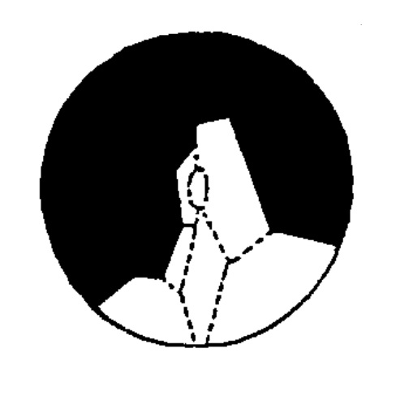

ARCHEOPYLE
The term "archeopyle" is defined by Evitt (1963) as an excystment opening formed at the germination stage of dinoflagellate cysts. In dinoflagellate cysts, apical, intercalary, precingular, and hypocystal archeopyle types and combinations of these series have been recognized. However, it is not possible to use this definition for cysts of gymnodinialean species that are not covered with typical thecal plates at the motile stage.
Saphopylic archeopyle: Archeopyle sutures correspond to paraplate boundaries and the operculum. Part of the cyst wall corresponding to the archeopyle is always detached from the cyst body. The archeopyle type can be subdivided into either apical, intercalary, precingular, or a combination from one or more plate series. Most modern cysts belonging to peridinial and gonyaulacal group have this archeopyle type.
Theropylic archeopyle: Archeopyle sutures follow paraplate boundaries. The operculum is usually attached to the cyst. This caused by the incomplete development of archeopyle sutures on the cyst body. This archeopyle can also be subdivided into several types based on the position of the sutures. Matsuoka et al. (1989) showed a provisional subdivision for this archeopyle, but further careful examination is needed to confirm this observation. Modern cysts produced by diplopsalid and calciodinellid species have this archeopyle type.
Cryptopylic archeopyle: archeopyle suture does not reflect any plate boundary. The operculum is detached or free from the cyst caused by the absence of thecal plates in motile forms. Some modern gymnodinilian and gonyaulacacean cysts have this archeopyle type. On the basis of the shape of opening, this archeopyle type is classified into two forms, either chasmic (slit-like opening) or tremic (hole-like opening) (Matsuoka, 1985). It is notable that some modern cysts do not show any distinct excystment aperture after germination, probably because of the fragile nature of the cyst wall. This archeopyle type includes most cysts of Alexandrium species Peridinium faeroense Paulsen, and Ensiculifera imariense Kobayashi et Matsuoka (Matsuoka, 2000)
TYPES OF ARCHEOPYLE (MATSUOKA, 2008)
SAPHOPYLIC ARCHEOPYLE
| Apical |  Intercalary
Intercalary |
 Intercalary
Intercalary |
Intercalary |  Precingular
Precingular |
 Precingular
Precingular |
 Epicystal
Epicystal |
 Apical/interc./precing. |
THEROPYLIC ARCHEOPYLE
| Apical |  Apical
Apical |
Intercalary |  Epicystal
Epicystal |
Apical/Intercalary |  Apical/Intercalary
Apical/Intercalary |
| Transapical |
CRYPTOPYLIC ARCHEOPYLE
| Tremic | Tremic | Tremic | Chasmic | Chasmic | Chasmic |
ARCHEOPYLE
The archeopyle (Evitt, 1961, 1967) is the opening in the cyst wall through which the protoplast emerges during excystment. The archeopyle is operculate in most species, but it may also be slitlike. The etymological reference of the term to an opening in ancient (i.e., fossil) dinoflagellates is no longer appropiate, for archeopyles are well known in cysts of living species, although this was not so at the time it was proposed.
Gocht, (1983, p. 268-269) commented that the archeopyle occupies a special position among the characters of dinoflagellate cysts. In the first place, it cannot be acommodated in the definitions of either thecamorphic or cystomorphic features; it meets the requirements of both groups. Further, the formative process of the archeopyle is different from that of the other cyst structures. On the one hand, the archeopyle is a thecamorphic feature of the cyst in that it most frequently expresses an easily recognizable fraction of the paratabulation. On the other hand, it is typically cystomorphic, because comparable mechanics are not know on the theca.
Little is known about the biological processes related to archeopyle formation and function. Normally it is defined by a line of actual or potential separation through the cyst wall, which may be visible as a fine line under the microscope. Many archeopyles provide communication directly between the innermost cavity of the cyst and the exterior. Others, in some cavate cysts, provide obvious connection only between the pedicel or the ectocoel and the exterior, whereas the more inward wall layer (i.e., ophragm or autophragm) shows no opening.
As more has been learned about the archeopyle, the concept of its structure and the descriptive terminology applied to it has changed.
The principal archeopyle suture is the primary determinant of the archeopyle. This line of structural and probably also compositional discontinuity in the wall apparently originates at the time of wall formation and localizes the opening that develops during excystment. It is often visible in an unopened cyst as a line whose brightness contrasts with that of the rest of the wall (transmitted light), or as a fine linear depression in the wall surface. A difference in ultra-structure of the wall material at the locus of the suture may also be apparent (Jux, 1968). In modern cyst, the suture may be opened by chemical treatment (acetolysis) as well as excystment of the living cell.
Most commonly the principal archeopyle suture more or less completely surrounds a portion of the cyst wall, the archeopyle operculum, whose release forms the opening when the wall ruptures along the suture. It is common for the suture to run approximately along a sequence of parasutures and for the operculum to comprise one or more entire paraplates. From evidences of paratabulation independent of the archeopyle that the archeopyle suture in many species deviates from a parasutures.
A combination archeopyle is a polyplacoid opening that involves paraplates from more than one series.
The principal archeopyle suture may be unbranched (straight, curved or angled), or it may have branches in the form of accesory archeopyle sutures which extend onto either the operculum or the rest of the cyst, or both. Accesory sutures may range from in the archeopyle margin to relatively long branches from the principal suture. In the latter case, the accesory sutures may separate flaplike portions of the cyst wall, or fully subdivide the operculum into two or more separable opercular pieces. If the operculum is entire or only incompletely divided by accessory sutures, it is a simple operculum; but if accesory sutures divide it completely, the operculum is compound. A monoplacoid operculum is necessarily simple; polyplacoid opercula may be simple or compound.
An operculum completely surrounded by the principal suture is said to be free, and it will separate fully from the rest of the cyst if the suture opens along its entire length. A free operculum (or free opercular pieces, if the operculum is compound) may also remain locally adherent (connotation: joined or united, although usually separate) wherever the suture does not open, but such adherence is an incidental condition and cannot be recognized unless the suture is partly open elsewhere. Contrasting with a free operculum (whether adherent or not) is an adnate operculum, which is incompletely surrounded by the archeopyle suture. An adnate operculum is locally continuous with the rest of the cyst where the suture is interrupted and this continuity can often be recognized, even if the suture is nowhere open. The free or adnate condition of the operculum is constant within most species and has been used as the principal criterion for distinguishing a few genera. Laterally adnate opercula possibly occur in cysts of some Pleistocene and living species.
WHile it is important to distinguish between adnate and adherent opercula, to do so may require careful observation under high magnification with critical lighting. Persistent presence of the operculum, combined with apparently complete confluence of the wall surface across the gap between the visible ends of the archeopyle suture, is positive indication of the adnate condition. Loss of adnate opercula through tearing is indicated by an irregular break.
The characters of the archeopyle and its operculum relate closely to the wall structure at the locus of the opening. If the wall is an autophragm or is composed of two layers closely linked in the archeopyle area, only a single opening (with a single operculum) is developed. However, if wall layers are separated in the area of the archeopyle (e.g., in some cavate cysts), two distinct openings (peri- and endoarcheopyle, or ecto- and autoarcheopyle) may occur. In most cases the openings in different wall layers of one specimen are of the same type.
An ectophragm, if present normally is either incomplete in the region of the archeopyle or opens as part of the periphragm on which it is supported. Therefore, the features of ectoarcheopyle and ectoperculum in such cysts usually need not be detailed separately.
The relative sizes and shapes of archeopyle through the separated walls of cavate cysts are strongly influenced by the contours and spacing of the two walls, even if both archeopyles are of the same type. Archeopyle dimensiones as a fraction of cyst dimensions vary greatly. At one extreme, exemplified by some peridinioid cysts with relatively small intercalary archeopyles, the opening is so small that only a severely distorted or subdivided protoplast could pass through it. At the other extreme, an archeopyle whose principal suture runs approximately along the equator of a spherical cyst would allow the entire protoplast to leave the cyst as one body without distortion.
Archeopyles apparently may be situated on any part of the cyst, archeopyle are located in the hypocyst (involving antapical paraplates and postcingular paraplates in the siliceous cysts of Peridinites. Note that the term epicystal archeopyle has the special connotation of a large combination archeopyle that involves all (not just any) paraplates of the epicyst, the archeopyle suture running approximately along the paracingulum. The term archeopyle type applies to the sum of the characteristics of the excystment aperture in a single specimen. However, an archeopyle formula, in which symbols stand for the most important morphologic features. (Hamza, 2013).
BIBLIOGRAPHY:
- Hamza, R. A. R. (2013). Dr. Ali Soliman (Doctoral dissertation, Faculty of Science Geology Department Dinoflagellate cysts: principals Essay submitted to the Geology Department faculty of science, Tanta university).
- Matsuoka, K., & Fukuyo, Y. A. S. U. W. O. (2000). Technical guide for modern dinoflagellate cyst study. WESTPAC-HAB, Japan Society for the Promotion of Science, Tokyo, Japan, 47. pp. 22.